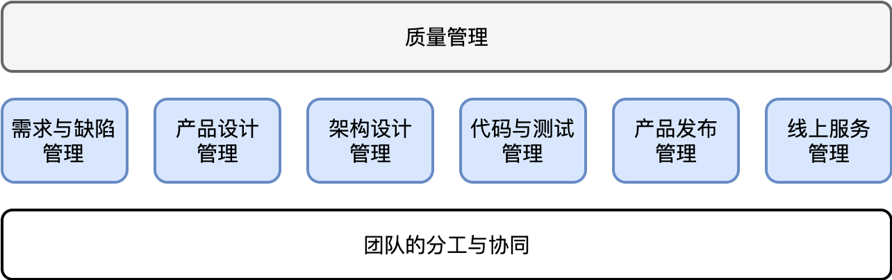

- 00 开篇词 怎样成长为优秀的软件架构师？.md
- 01 架构设计的宏观视角.md
- 02 大厦基石：无生有，有生万物.md
- 03 汇编：编程语言的诞生.md
- 04 编程语言的进化.md
- 05 思考题解读：如何实现可自我迭代的计算机？.md
- 06 操作系统进场.md
- 07 软件运行机制及内存管理.md
- 08 操作系统内核与编程接口.md
- 09 外存管理与文件系统.md
- 10 输入和输出设备：交互的演进.md
- 11 多任务：进程、线程与协程.md
- 12 进程内协同：同步、互斥与通讯.md
- 13 进程间的同步互斥、资源共享与通讯.md
- 14 IP 网络：连接世界的桥梁.md
- 15 可编程的互联网世界.md
- 16 安全管理：数字世界的守护.md
- 17 架构：需求分析 (上).md
- 18 架构：需求分析 (下) · 实战案例.md
- 19 基础平台篇：回顾与总结.md
- 20 桌面开发的宏观视角.md
- 21 图形界面程序的框架.md
- 22 桌面程序的架构建议.md
- 23 Web开发：浏览器、小程序与PWA.md
- 24 跨平台与 Web 开发的建议.md
- 25 桌面开发的未来.md
- 26 实战（一）：怎么设计一个“画图”程序？.md
- 27 实战（二）：怎么设计一个“画图”程序？.md
- 28 实战（三）：怎么设计一个“画图”程序？.md
- 29 实战（四）：怎么设计一个“画图”程序？.md
- 30 实战（五）：怎么设计一个“画图”程序？.md
- 31 辅助界面元素的架构设计.md
- 32 架构：系统的概要设计.md
- 33 桌面开发篇：回顾与总结.md
- 34 服务端开发的宏观视角.md
- 35 流量调度与负载均衡.md
- 36 业务状态与存储中间件.md
- 37 键值存储与数据库.md
- 38 文件系统与对象存储.md
- 39 存储与缓存.md
- 40 服务端的业务架构建议.md
- 41 实战（一）：“画图”程序后端实战.md
- 42 实战（二）：“画图”程序后端实战.md
- 43 实战（三）：“画图”程序后端实战.md
- 44 实战（四）：“画图”程序后端实战.md
- 45 架构：怎么做详细设计？.md
- 46 服务端开发篇：回顾与总结.md
- 47 服务治理的宏观视角.md
- 48 事务与工程：什么是工程师思维？.md
- 49 发布、升级与版本管理.md
- 50 日志、监控与报警.md
- 51 故障域与故障预案.md
- 52 故障排查与根因分析.md
- 53 过载保护与容量规划.md
- 54 业务的可支持性与持续运营.md
- 55 云计算、容器革命与服务端的未来.md
- 56 服务治理篇：回顾与总结.md
- 57 心性：架构师的修炼之道.md
- 58 如何判断架构设计的优劣？.md
- 59 少谈点框架，多谈点业务.md
- 60 架构分解：边界，不断重新审视边界.md
- 61 全局性功能的架构设计.md
- 62 重新认识开闭原则 (OCP).md
- 63 接口设计的准则.md
- 64 不断完善的架构范式.md
- 65 架构范式：文本处理.md
- 66 架构老化与重构.md
- 67 架构思维篇：回顾与总结.md
- 68 软件工程的宏观视角.md
- 69 团队的共识管理.md
- 70 怎么写设计文档？.md
- 71 如何阅读别人的代码？.md
- 72 发布单元与版本管理.md
- 73 软件质量管理：单元测试、持续构建与发布.md
- 74 开源、云服务与外包管理.md
- 75 软件版本迭代的规划.md
- 76 软件工程的未来.md
- 77 软件工程篇：回顾与总结.md
- 加餐 如何做HTTP服务的测试？.md
- 加餐 实战：“画图程序” 的整体架构.md
- 加餐 怎么保障发布的效率与质量？.md
- 热点观察 我看Facebook发币（上）：区块链、比特币与Libra币.md
- 热点观察 我看Facebook发币（下）：深入浅出理解 Libra 币.md
- 用户故事 站在更高的视角看架构.md
- 答疑解惑 想当架构师，我需要成为“全才”吗？.md
- 结束语 放下技术人的身段，用极限思维提升架构能力.md
- 课外阅读 从《孙子兵法》看底层的自然法则.md
77 软件工程篇：回顾与总结
77 | 软件工程篇：回顾与总结你好，我是七牛云许式伟。
我们架构课的最后一章软件工程篇到此就要结束了。今天我们就本章的内容进行回顾与总结。
架构师并不是一个纯技术岗位。我们从软件工程的视角来看，架构师的职责就是要对软件工程的执行结果负责，这包括：按时按质进行软件的迭代和发布、敏捷地响应需求变更、防范软件质量风险（避免发生软件质量事故）、降低迭代维护成本。

软件工程所覆盖的范畴非常广泛。从开始的需求与历史版本缺陷，到新版本的产品设计，到架构设计，到编码与测试，到最终的产品发布，到线上服务的持续维护。
还有贯穿整个工程始终的，是不变的团队分工与协同，以及不变的质量管理。
我们这个专栏并没有打算站在完整的软件工程角度去谈，更多还是从架构师与软件工程的关联入手。
本章的内容大体如下图所示。
软件工程是一项团体活动，大家有分工更有协同。不同的个体因为能力差别，可以形成十倍以上的生产力差距。而不同的团体更是如此，他们的差距可能更上一个数量级，达到百倍以上的生产力差距。
百倍以上的差距是什么概念？这就是说，一个团队只需要三四天做出来的东西，另一个团队可能需要一年才能做出来。两者之间的差距之大，只能用天壤之别来形容。
个人与个人的差距，你可以认为是技术上的能力差距的反映。但团队与团队的差距，不是简单的技术上的能力差距，而是有着更为深刻的原因。
高效团队的效率，核心体现在以下两个方面：
- 团队开发一个新功能的效率。它体现的是架构的老化程度。
- 团队新人的融入效率。新人多快的速度可以融入到团队，理解业务系统的现状及团队的做事方式。
开发新功能的效率，主要取决于架构的优劣。这初听起来是一项纯技术上的事情。但如果我们站在时间维度上长达数年甚至数十年的软件工程的角度看，能够维持架构设计的持续优异，这绝非某个人的技术能力可以做到的事情，而是要靠团队共同的坚持。
而从新人融入效率看，更非技术能力所能够简单囊括，而是仰仗团队对业务传承的坚持。
这些东西的背后，关乎的都是有关于协同的科学。
有的团体像一盘散沙，充其量可以叫团伙。有的团体则有极强的凝聚力，整个团队上下同心，拧成一股绳，这种团体才是高效率组织，是真正意义上的团队。
共识是团队效率的基础。
从软件工程角度来说，产品设计和架构设计是团队最大的共识。架构过程就是一次团队共识确认的过程，从项目的混沌之初，到团队形成越来越清晰且一致的视图（ Picture）。
高效团队往往还有极高的团队默契，这让他们无论是维护老项目还是做什么新项目都如鱼得水。团队默契可以包含很多东西，比如：
- 共同的目标；
- 团队的做事态度与价值观；
- 编码规范；
- 架构设计文档的模板；
- 软件工程的方法论；
- 基础架构及技术选型；
- ……
对于一个团队新人来说，融入一个团队或一个项目的基础过程就是阅读别人写的源代码。既有的文档越清楚，新人阅读代码的障碍就越小，融入的速度就越快。
文档要怎样才能把问题说清楚？
文档传递的是思维方式。大多数程序员不善于写文档，甚至讨厌写文档。这背后的根源不在于文档本身，而在于有效的思维表达方式，这需要长期的训练。
软件工程的各个环节都有其交付物。理想情况下，上一个环节的输出是下一环节的输入。软件系统的质量管理一般从这些交付物的管理入手。例如：交付物的版本管理、单元测试、持续构建，灰度发布，等等。
从更宏观的视角看，我们还涉及人力资源规划的问题。什么东西应该外包出去，包给谁？软件版本的计划是什么样的，哪些功能先做，哪些功能后做？
这些选择非常非常重要。因为他们属于业务架构的顶层设计。
除了传统意义上的外包外，外包方式还有：开源（众包）、云服务（服务外包）、商业软件（产品外包）。在外包方式的选择上，我们的建议是：
我们尽可能不要做太多事情。非核心竞争力相关的，能够外包的我们尽可能外包。
在外包选择上，我们优先选择云服务，次选开源，最后才考虑传统的外包。
当然，哪些事情是非核心竞争力相关，这一点不同公司可能判断不尽相同。但基本的判断逻辑是，越与我们面向用户所提供的业务流程相关，越靠近企业的核心竞争力，也就越不能外包。
软件版本迭代的规划需要根据业务的发展阶段而定。在不同阶段，版本迭代的侧重点会有极大的不同。
从 0 到 1 阶段，我们验证的是用户使用姿势，也就是产品设计的规格。这时性能并不是第一位的。
但是进入扩张阶段，产品竞争力就是一些用户关心的关键指标。这时候我们迭代的不再是用户使用姿势，它已经非常稳定。我们迭代的往往是看不见的非功能性需求，是那些用户真正最在乎的部分。
而遇到会对产品产生巨大冲击的功能需求，头脑别发热，谨慎处理。回到从 0 到 1 阶段的方法论，在少量客户上先做灰度。
结语
软件工程还很年轻，只有 50 年的历史。有关于软件工程的系统与方法论都仍然在快速演化与迭代中。
这意味着意我们不必墨守成规。要勇于探索，勇于打破固有的惯例，去建立新的方法论，新的惯例。
但需要强调的是，打破惯例不是胡闹，不是要做不尊重科学的 “野蛮人”。今天仍然有那么一批工程师，人数还不在少数，他们随心所欲、任性而为，不喜欢写架构设计文档，不喜欢写单元测试，不喜欢代码互审（code review）。
我们首先需要尊重团队协同的科学，在尊重的基础上去探索新的更高效的协同方法论。
很早之前我说过以下这段话，它很长一段时间里，被贴在某家公司墙上：
严谨并非创新的对立面，而是创新的重要基础。每个人都有灵光乍现的时刻，但是唯有那些拥有严谨的科学态度的人才能抓住它，把它变成现实。
我想，它非常适合作为软件工程篇的结束语。
如果你对今天的内容有什么思考与解读，欢迎给我留言，我们一起讨论。至此，本章 “软件工程篇” 结束，下一讲将结束本专栏的内容。
如果你觉得有所收获，也欢迎把文章分享给你的朋友。感谢你的收听，我们下期再见。
© 2019 - 2023 Liangliang Lee. Powered by gin and hexo-theme-book.